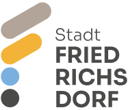

This is the name of my home town in Germany.
This site outlines opportunities, attractions, and community features of Friedrichsdorf, my charming small home town in Germany. The project will apply web development skills learned in WDD 131, including responsive design, interactive elements, and modern CSS techniques to create an engaging digital presence for the town.
The color scheme for the website is inspired by logo of the official web page of Friedrichsdorf, incorporating earthy tones and vibrant accents to create a welcoming and engaging atmosphere.
The typography for the website will feature a combination of modern sans-serif Merriweather fonts for headings and easy-to-read sans-serif Open Sans fonts for body text, ensuring a clean and professional appearance.